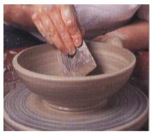
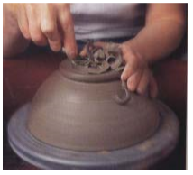

Pengembangan Teknik Pembuatan Keramik
Membuat vas dengan teknik pilin rata
- Buatlah lempengan tanah dan ukurlah diameter dasar benda.
- Potong lempengan tanah dengan cara sambil memutar banding wheel, tusuklah lempengan tersebut hingga putus.
- Gulung dan tekan terus menerus untuk membentuk pilinan yang panjang dan haluskan batangan pilinan tanah.
- Letakkan pilinan tersebut diatas lempengan tanah tekanlah dan satukan pilinan dengan dasar benda.
- Buatlah pilinan, tambahkan pilinan pada benda yang dibuat kemudian satukan dengan menghalusknnya pada permukaan dalam dan luar.
- Buat pilinan kemudian satukan hingga membentuk suatu benda keramik.
- Ratakan permukaan dinding bagian luar menggunakan scrapper hingga menghasilkan bentuk benda keramik dengan teknik pilin rata. Angin-anginkan hingga kering.
Membuat toples dengan Teknik lempeng lengkung
- Siapkan tanah liat plastis, uli menggunakan kedau telapak tangan di atas meja pengulian hingga menjadi homogen dan bebas dari gelembung udara.
- Buatlah lempengan tanah liat menggunakan roll kayu atau slab roller dengan ketebalan kurang lebih 9 mm. Periksa lempengan tanah liat tersebut dari gelembung udara. Tusuklah dengan jarum jika terdapat gelembung udara.
- Buatlah pola dari kertas karton bentuk silindris, kemudian potong pola tersebut sesuai dengan bentuk benda keramik yang akan dibuat. Letakkan pola dari kertas karton tersebut pada lempengan tanah liat yang telah dibuat.
- Potonglah lempengan tanah liat sesuai dengan pola silindris yang telah dibuat menggunakan jarum, lakukan dengan hati-hati.
- Siapkan lempengan tanah liat yang telah dipotong untuk dirangkai menjadi bentuk benda keramik. Bila lempengan tanah liat terlalu lembek, anginanginkan agar menjadi lebih keras.
- Tempatkan lempengan tanah liat berbentuk lingkaran untuk dasar benda silindris pada papan landasan di atas banding wheel, gores menggunakan jarum dan olesi dengan slip tanah liat
- Buatlah lempengan tanah liat persegi panjang menjadi bentuk silinder dengan bantuan pola kertas karton. Gores dan olesi slip tanah liat pada bagian yang akan disambung. Tekan dan rapikan sambungan tersebut agar menyatu dengan kuat.
- Angkat silinder tanah liat dan rangkai dengan dasar benda silinder yang telah dipersiapkan di atas banding wheel. Lakukan dengan cermat agar tepat di tengah lingkaran dasar benda kemudian tekan pelan-pelan supaya kuat.
- Rapikan bagian sambungan silnder dengan dasar benda, berilah pilinan tanah liat kemudian haluskan menggunakan butsir kayu. Pusatkan bentuk silnder tersebut dengan memutar banding wheel pelan-pelan.
- Tempatkan lempengan tanah liat bentuk lingkaran pada lempengan yang berlubang untuk membuat agar tutup menjadi cembung. Lakukan dengan hati-hati agar tepat di tengah-tengah.
- Putar banding wheel pelan-pelan menggunakan tanagn kiri, kemudian tekan bagian tengah lempengan tanah liat pelanpelan menggunakan jari telunjuk hingga membentuk cekungan.
- Buatlah kaki tutup benda silinder tersebut menggunakan potongan lempengan tanah liat. Gores dan olesi dengan slip tanah liat pada bagian yang disambung. Rapikan kaki tutup menggunakan bustir kawat atau alat ribbon.
- Buatlah knob pada tutup benda silinder menggunakan pilinan tanah liat yang dilengkungkan. Ingat, gores dan olesi slip pada bagian sambungan dan tekan agar menyatu dengan kuat. Rapikan menggunakan butsir kayu.
- Angin-anginkan benda slinder bertutup yang telah selesai dibentuk agar menjadi setengah kering sebelum dijemur di panas matahari.
- Toples tinggal dibakar dan diglasir. Dan setelah dingin bisa digunakan.
Membuat mangkok dengan Teknik putar
- Tempatkan tanah liat plastis di atas kepala putaran. Pusatkan dengan tanah liat dengan cara menekan menggunakan kedua telapak tangan kemudian membentuknya menjadi kerucut tanah liat. Lakukan proses ini hingga tanah liat benar-benar memusat dan bebas dari gelembung udara. Gunakan baki (splash pan) atau paha untuk menopang lengan tangan.
- Tekan tanah liat ke bawah dan dorong keluar menggunakan sisi dari tangan kiri, tangan kanan menahannya pada bagian luar benda. Buatlah dasar benda lebih tebal untuk memudahkan dibentuk kakinya. Lumasilah tanah liat dan tangan dengan air jika diperlukan.
- Bentuklah dasar tanah liat untuk mangkok dengan menekan bagian dalam tanah liat menggunakan jari-jari tangan kanan, sedangkan tangan kiri menahan agar posisi tangan tetap stabil. Lakukan dengan pelan-pelan dan hati-hati.

- Bentuk dinding mangkok dengan menaikkan dan melebarkan dinding tanah liat menggunakan jari-jari tangan kanan sedangkan ibu jari kanan menahannya dari bagian luar. Usahakan bagian dalam menjadi lengkungan yang lembut tanpa meninggalkan sudut pada lengkungan tersebut.
- Naikkan dan lebarkan dinding dari mangkok, hal ini dapat dilakukan dengan dengan menjepit dinding mangkok di sela-sela jari tangan kiri sedang tangan kanan membentuknya di bagian dinding luar mangkok. Lakukan pembentukan ini mulai dari dasar mangkok hingga bagian dalam membentuk lengkungan yang halus.
- Potonglah bibir mangkok menggunakan kawat pemotong apabila ketinggiannya sudah tidak sama, hal ini dilakukan untuk menghindari jatuhnya dinding mangkok karena gaya sentripetal. Ratakan bibir mangkok menggunakan jari tangan kanan.
- Ukur diameter dan tinggi mangkok, naikkan dan lebarkan dinding mangkok apabila diameter dan tingginya masih kurang karena pemotongan bibir mangkok sebelumnya. Haluskan dinding bagian luar mangkok menggunakan rib dan tangan kiri menahannya dari bagian dalam mangkok agar mangkok tetap memusat.
- Haluskan permukaan bagian dalam mangkok menggunakan rib, lakukan secara hati-hati agar bentuk lengkungan mangkok tidak berubah. Mulailah menggunakan rib dari dasar dan pelan-pelan digerakkan ke arah atas. Potonglah dasar mangkok, angkat dan angin-anginkan hingga cukup kering untuk dibentuk kakinya.

- Pusatkan mangkok yang telah cukup kering pada kepala putaran secara terbalik, apabila telah memusat berilah chuck sebagai pengunci agar mangkok tidak bergeser pada saat dikikis, dapat pula digunakan giffin grip. Lakukan pengikisan dinding luar mangkok mengikuti bentuk lengkungan bagian dalam menggunakan alat ribbon.
- Lakukan pengikisan kaki bagian luar dengan hati-hati, jangan mengikis terlalu tebal. Usahakan agar alat tersebut tetap stabil sehingga tidak merusak mangkok. Bentuklah profil kaki mangkok bagian luar menggunakan alat ribbon apabila diameter kakinya sudah sesuai dengan ukuran yang telah ditentukan.
- Kikis dasar mangkok menggunakan alat ribbon untuk membentuk kaki bagian dalam dari tengah mangkok hingga membentuk lingkaran Lakukan dengan hati-hati agar supaya dinding dasar mangkok tidak terlalu tipis. Bentuk kaki mangkok hingga sempurna. Angkat mangkok dan anginanginkan hingga kering.

- Keramik yang telah dibakar dan diglasir dapat digunakan.
Membuat patung kucing dengan Teknik cetak tuang
- Ambil tanah liat model letakkan di atas papan landasan pada banding wheel.
- Buatlah model binatang secara global menggunakan tanah liat model.
- Bentuklah model binatang secara detail pada tiap bagiannya kemudian haluskan menggunakan spon.
- Haluskan model binatang cetakan dua sisi atau lebih untuk teknik cetak tuang untuk siap dicetak.
- Menentukan garis bagi pada model untuk menentukan belahan cetakan gips dan tentukan lubang pengecoran untuk menuang slip tanah liat. Lakukan dengan benar agar tidak terjadi kaitan pada waktu pencetakan.
- Buatlah backing pada model binatang menggunakan tanah liat plastis sesuai dengan garis bagi model yang telah dibuat. Olesi model dengan larutan pemisah.
- Tutuplah model dan backing menggunakan lenoleum untuk membuat cetakan gips yang pertama, tentukan ketebalan cetakan gips yang akan dibuat (kurang lebih 6 cm).
- Ikat lenoleum menggunakan karet dan berilah pilinan tanah liat pada bagian dasar agar tidak ada adonan gips yang keluar.
- Buat adonan masa gips dengan ukuran yang sesuai dengan ketebalan cetakan yang akan dibuat.
- Tuang adonan gis ke dalam cetakan model secara hati-hati dan merata pada seluruh permukaan model dan tunggu hingga gips mengeras.
- Buka lenoleum cetakan dan backing tanah liat dari model, buatlah beberapa lubang untuk kunci cetakan gips kemudian bersihkan. Olesi gips pada bagian belahan cetakan menggunakan larutan pemisah agar masingmasing cetakan gips dapat dilepas/dibuka dengan mudah.
- Pasang lenoleum cetakan untuk membuat cetakan gips sisi lainnya kemudian olesi dengan larutan pemisah, ikat lenoleum dengan karet dan berilah pilinan tanah liat pada bagian dasar agar tidak ada adonan gips yang keluar.
- Buat adonan gips dan tuang pada model secara hati-hati dan merata pada seluruh permukaan model, tunggu hingga cetakan gips menjadi keras.
- Buka lenoleum kemudian buka cetakan gips dengan hati-hati.
- Satukan cetakan, kemudian buatlah tirus menggunakan tanah liat plastis untuk membuat lubang cetakan gips. Pasang lenolium kemudian buat adonan gips dan tuang ke dalam cetakan untuk membuat cetakan gips berikutnya.
- Buka lenolium dan cetakan kemudian bersihkan dan jemur hingga kering.
- Siapkan cetakan yang telah kering, kemudian satukan dan ikat menggunakan karet.
- Siapkan slip tanah liat, sebelum digunakan aduklah menggunakan mixer tangan agar menjadi homogen.
- Tuang slip tanah liat ke dalam cetakan hingga penuhi, lakukan berulang-ulang hingga mencapai ketebalan benda yang diinginkan. Tuang balik slip tanah liat dari dalam cetakan, kemudian letakkan cetakan dalam posisi terbalik agar sisa-sisa slip tanah liat dapat mengalir.
- Lepaskan karet pengikat, buka cetakan gips apabila benda hasil cetakan sudah dapat dilepaskan.
- Ambil benda keramik hasil cetakan kemudian rapikan bagian sambungan kemudian haluskan permukaan benda menggunakan spon basah.
- Angin-anginkan benda keramik tersebut kemudian keringkan hingga siap dibakar biscuit.